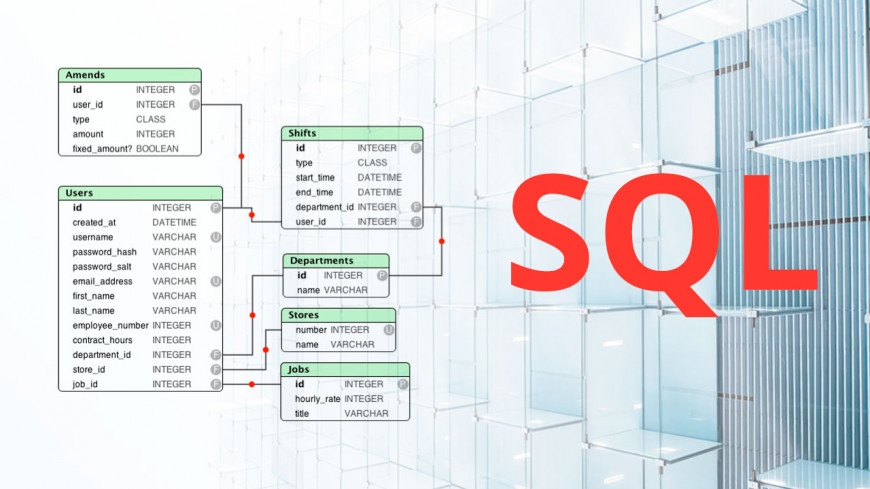
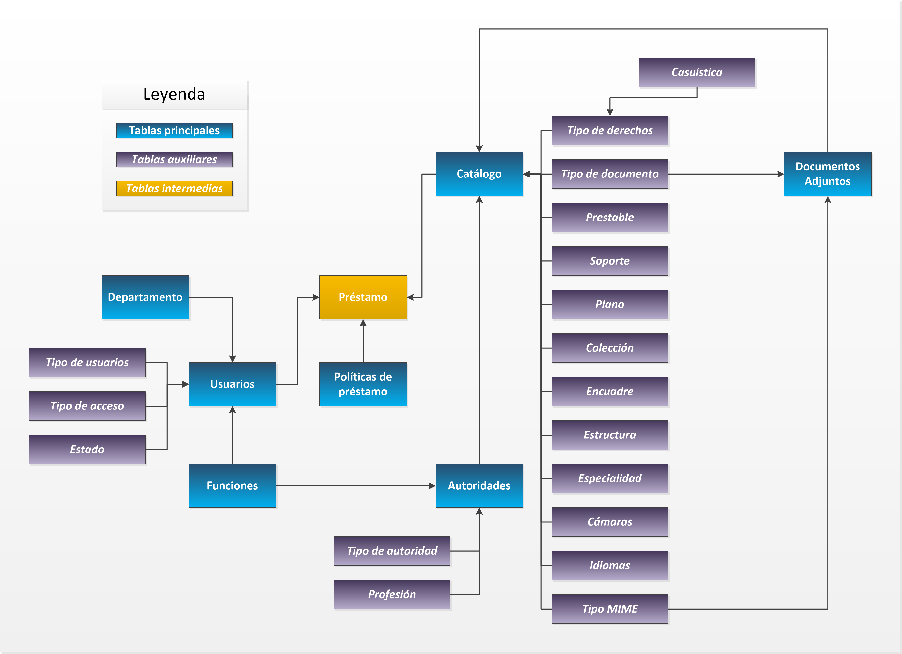

Introducción a la Base de Datos
Una base de datos es un conjunto de datos pertenecientes a un mismo contexto y almacenados sistemáticamente para su posterior uso. En este sentido; una biblioteca puede considerarse una base de datos compuesta en su mayoría por documentos y textos impresos en papel e indexados para su consulta.
Actualmente, y debido al desarrollo tecnológico de campos como la informática y la electrónica, la mayoría de las bases de datos están en formato digital, siendo este un componente electrónico, por tanto se ha desarrollado y se ofrece un amplio rango de soluciones al problema del almacenamiento de datos.
Existen programas denominados sistemas gestores de bases de datos, abreviado SGBD (del inglés Database Management System o DBMS), que permiten almacenar y posteriormente acceder a los datos de forma rápida y estructurada. Las propiedades de estos DBMS, así como su utilización y administración, se estudian dentro del ámbito de la informática.
Base de Datos con MySQL
Bases de datos estáticas
Son bases de datos únicamente de lectura, utilizadas primordialmente para almacenar datos históricos que posteriormente se pueden utilizar para estudiar el comportamiento de un conjunto de datos a través del tiempo, realizar proyecciones, tomar decisiones y realizar análisis de datos para inteligencia empresarial.
Bases de datos dinámicas
Son bases de datos donde la información almacenada se modifica con el tiempo, permitiendo operaciones como actualización, borrado y edición de datos, además de las operaciones fundamentales de consulta. Un ejemplo, puede ser la base de datos utilizada en un sistema de información de un supermercado.
Bases de datos bibliográficas
Solo contienen una subrogante (representante) de la fuente primaria, que permite localizarla. Un registro típico de una base de datos bibliográfica contiene información sobre el autor, fecha de publicación, editorial, título, edición, de una determinada publicación, etc.

Puede contener un resumen o extracto de la publicación original, pero nunca el texto completo, porque si no, estaríamos en presencia de una base de datos a texto completo (o de fuentes primarias —ver más abajo). Como su nombre lo indica, el contenido son cifras o números. Por ejemplo, una colección de resultados de análisis de laboratorio, entre otras.
